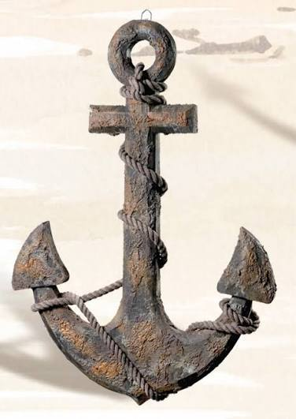
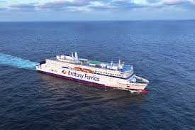
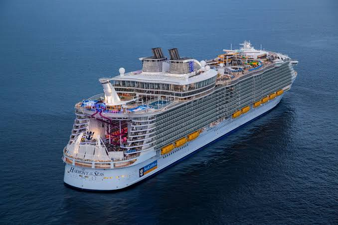

Welcome to Kenya Marine Suppliers Your trusted partner for quality marine products and equipment in Kenya. We supply reliable marine solutions, including safety equipment, vessel accessories, spare parts, and essential marine supplies to meet your needs. At Kenya Marine Suppliers, we are committed to delivering quality products, excellent customer service, and dependable solutions to the marine industry. Explore our products and let us help you find the right supplies for your marine needs.

Kenya Marine and Fisheries Research Institute - KMFRI (Est. 1979): Established through the Science and Technology (Amendment) Act to manage and research Kenya's marine and freshwater resources, building baseline scientific data for the Indian Ocean and inland.

At Kenya Marine Suppliers, we understand the importance of quality and reliability in the marine industry. That is why we strive to provide durable, dependable products designed to support vessel operations, marine maintenance, and everyday maritime activities.
We offer a wide range of marine-related products to serve shipping companies, boat operators, fishing businesses, marine engineers, and other industry professionals. Our goal is to make sourcing marine equipment and essential supplies simple, convenient, and reliable.
